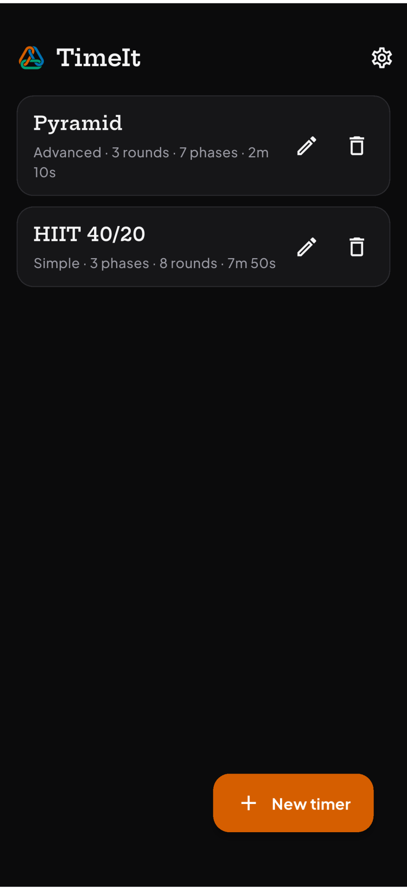
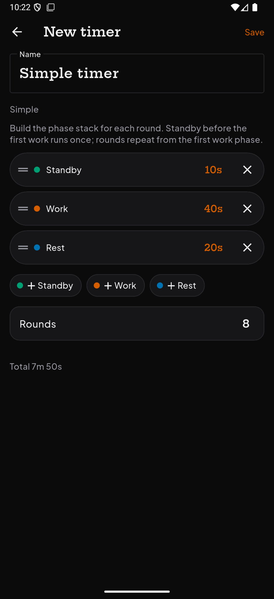
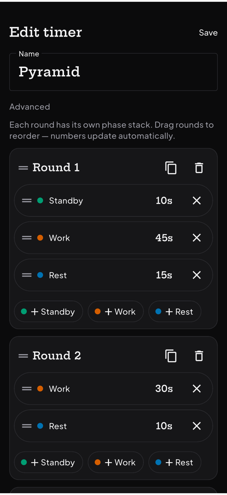
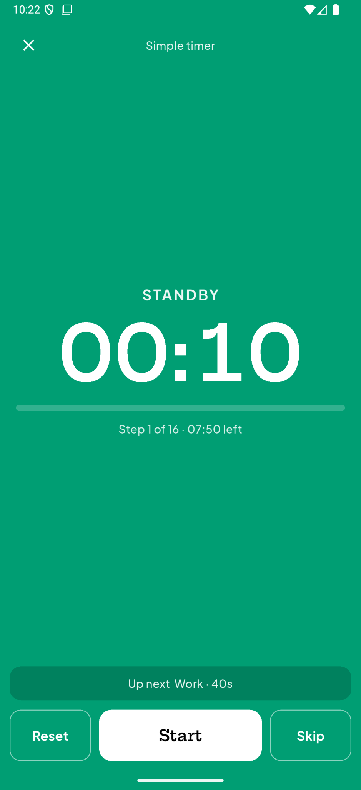
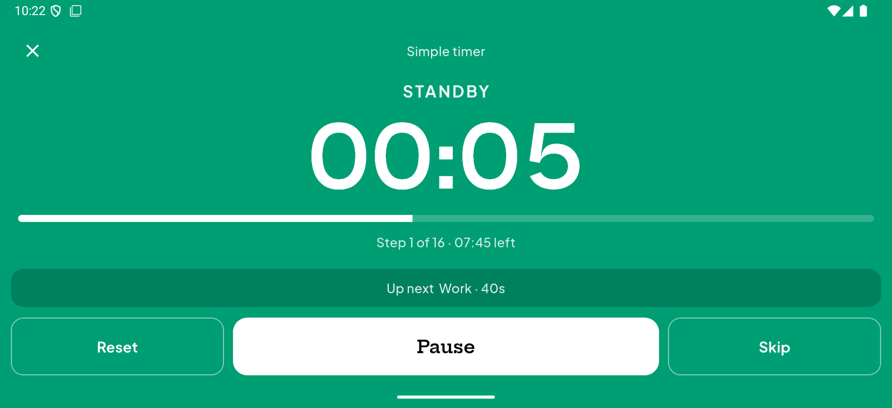
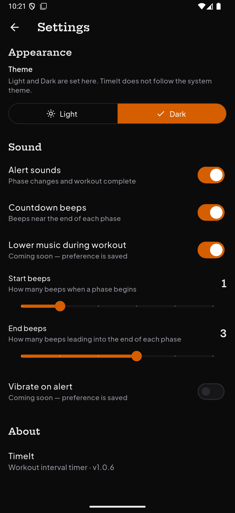
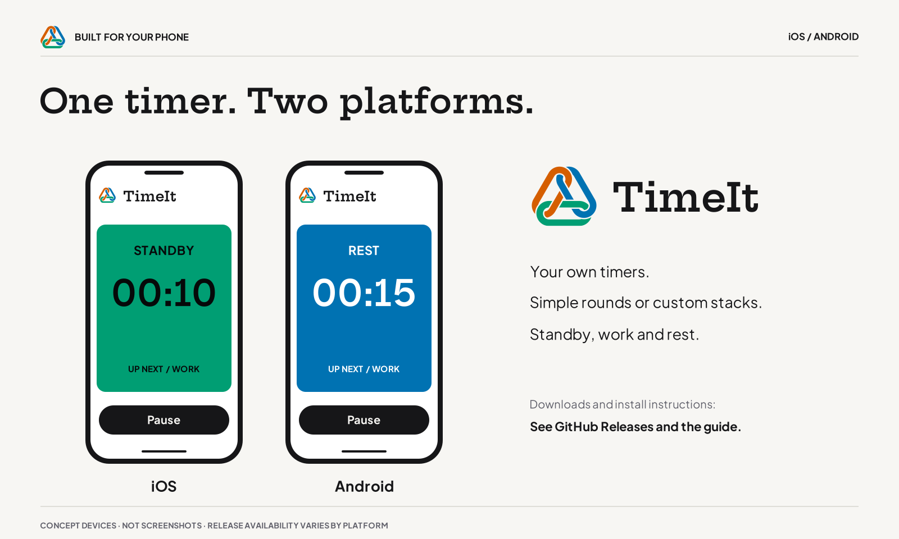

Standby
Get started
- Open TimeIt. Your saved timers appear on the home screen.
- If the list is empty, create a simple or advanced timer.
- Tap a timer to run it, or use edit / delete on the row.
TimeIt does not ship pre-built exercises. You create and delete your own timers and sets.

Work
Simple timers
A simple timer is the classic interval shape:
- Standby — optional get-ready time before the first work bout
- Work — effort interval
- Rest — recovery between rounds
- Rounds — how many work bouts to run
Rest is skipped after the last round. Save the timer with a name you will recognize later.

Rest
Advanced timers
Advanced mode is a list of rounds. Each round has its own phase stack:
- Add rounds; each round can differ from the others
- Inside a round, add standby, work, or rest phases in any order
- Set each phase duration and drag to reorder phases within the round
- Drag rounds up or down to reorder them — Round 1, 2, 3… renumber automatically
- Duplicate or delete a round; rounds run in order from first to last
Delete any phase you do not need. Keep at least one phase with a duration greater than zero across your rounds.
Example: Round 1 might be standby → work → rest; Round 2 only work → rest; Round 3 a shorter work → rest. Same idea as Simple’s rounds, but each round can have a different stack.

Work
Running a workout
- Open a timer from home.
- Tap Start. The screen fills with the current phase color.
- Use Pause / Resume, Skip to jump ahead, or Reset to return to the first phase.
- When the sequence finishes, the screen shows Done and you can restart.
In both portrait and landscape, the run screen puts large digits on top, then what’s up next and Start / Pause / Skip / Reset underneath. There is no phase stack list on the run screen.


Standby
Sounds
By default TimeIt plays:
- Beeps when a phase begins (count is adjustable in Settings, up to 5)
- Countdown beeps leading into the end of each phase (count is adjustable, up to 5)
- A completion sound when the workout ends
Turn alert sounds on or off in Settings (that master switch covers start beeps, end beeps, and complete). Set how many start and end beeps you want when alerts are on. Lowering music during a workout and vibrate-on-alert are saved preferences for upcoming builds.
Rest
Settings
Open Settings from the gear on the home screen.
Appearance
Choose Light or Dark. TimeIt does not follow the system theme — the choice is yours and stays until you change it.

Sound
- Lower music during workout — preference saved; audio ducking wiring comes next
- Alert sounds — master on/off for start beeps, end beeps, and complete
- Start beeps — slider, 0–5 (disabled when alert sounds are off)
- End beeps — slider, 0–5, leading into the end of each phase (disabled when alert sounds are off)
- Vibrate on alert — preference saved; haptics wiring comes next
Work
Install
Android release builds are on GitHub Releases (.apk for direct install, .aab for Play upload).
iOS release packages need a Mac with Xcode signing. When an IPA is published, it will appear on the same Releases page.
Install or update: on both Android and iOS, installing TimeIt checks whether the app is already on the device. If it is, the package updates in place (same app id, data kept). If it is not, it installs fresh. From this repo, run scripts/install-device.ps1 (Windows) or scripts/install-device.sh (macOS/Linux) with a connected device — the script detects the existing install and chooses update vs install automatically.
Source and issue tracking live in the TimeIt repository.
